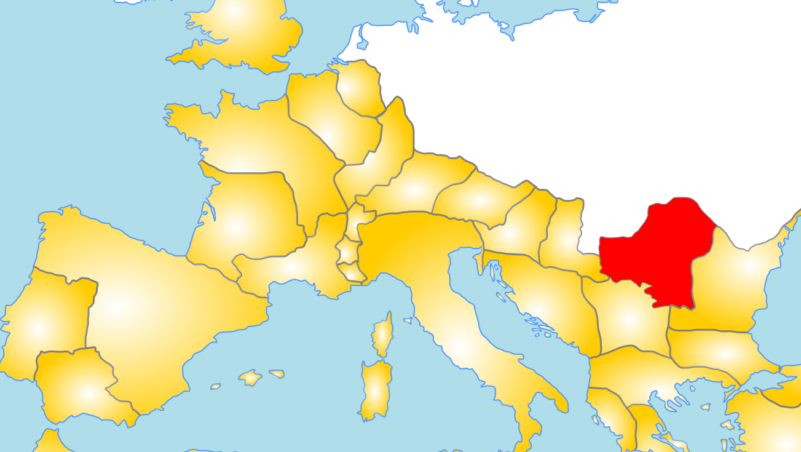
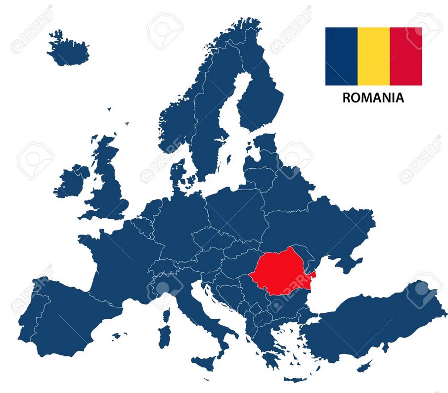

The Birth of Romanian
106 CE
Emperor Trajan conquered Dacia in 106 CE

476 CE
The Roman Empire falls

5th – 7th centuries CE
Slavic tribes start settling in Romania and neighboring countries
1800s
Daco-Romanian scholars re-Latinize the language to recognize its Romantic roots
1904 CE
The Romanian Academy officially implements a standardized written language with orthographic rules
The 4 Dialects
Common Romanian, also known as Proto-Romanian, developed into 4 mutually unintelligible dialects:
Daco-Romanian
Daco-Romanian is the main dialect of the language with 24-28 million speakers. Daco-Romanian is mainly spoken in Romania and the Republic of Moldova, where it is the official language and has approximately 22 to 26 million speakers. Small Daco-Romanian communities are in neighboring parts of Ukraine, Serbia, and eastern Hungary.
Aroromanian
The second largest dialect, Aroromanian, has approximately 350,000 speakers. Aroromanian is spoken in scattered, disconnected communities accross the southern Balkans. The vast majority of speakers live in northern and central Greece, the Republic of North Macedonia, and southwest Bulgaria.
Megleno-Romanian
Only a few thousand people still speak the Megleno dialect. Megleno-Romanian is natively collected in the small Moglen border region, which spans northern Greece and southeastern North Macedonia. Tiny diasporas also exist in Dobruja, Romania, and parts of Turkey.
Istro-Romanian
Istro-Romanian is isolated in a few small, rural villages such as Žejane and Šušnjevica on the Croatian Istria Peninsula.
Similarites and Differences from Latin
Case system preserved
Three case system — Direct (Nominative/Accusative), Oblique (Genitive/Dative), and Vocative (Direct Address)
75-80% of words are from Latin
One common change to words is replacing velar consonants with labial consonants: octo → opt
Verbs have shortened infinitives
Verbs have a shortened infinitive form from the original Latin (a cinta from Latin cantare)
Future tense formation
The future tense is formed by compounding a conjugated form of a vrea (to wish) with the infinitive of a verb (cantabo (Latin) becomes voi cinta (Romanian))
Bibliography
- https://slavic.ucla.edu/languages/romanian/background-info/
- https://www.britannica.com/topic/Romanian-language
- https://unesdoc.unesco.org/ark:/48223/pf0000187026
- https://glottolog.org/resource/languoid/id/megl1237
- https://www.researchgate.net/publication/378366178_Electronic_Linguistic_Resources_For_Historic_Standard_Romanian